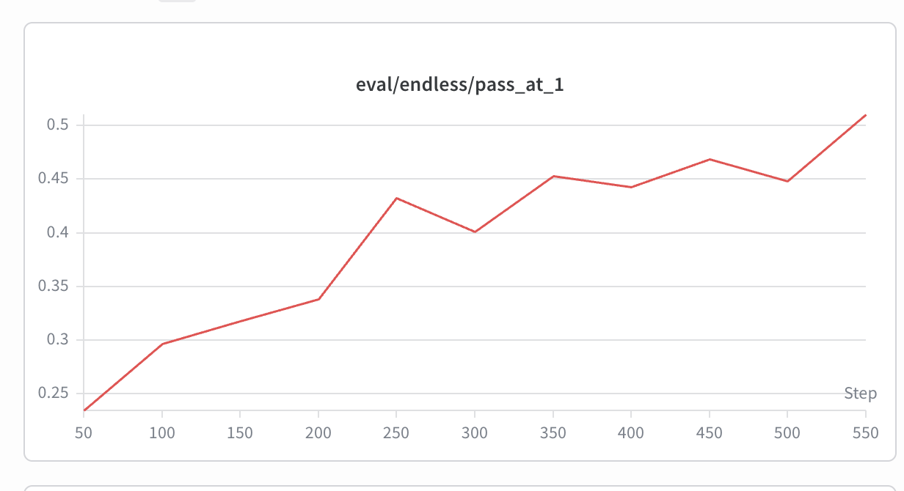

Reproducing OSS Agentic-RL Recipes — Status Summary
A running log of our attempts to reproduce open-source agentic reinforcement learning recipes (LLM agents trained with RL on real, verifiable, multi-turn environments: terminals, SWE-bench, etc.). For each recipe we record the model, RL framework, hardware, rollout strategy, data, and what actually happened.
Scope note: "agentic" here means the policy interacts with a real environment over many turns (run a shell command / edit code → observe stdout/test result → act again), and the reward comes from an objective verifier (pytest / FAIL_TO_PASS), not a learned reward model.
TL;DR comparison
| # | Recipe | Paper / Code | Model | Framework | GPUs | Result | Status |
|---|---|---|---|---|---|---|---|
| 1 | Endless Terminals | arxiv 2601.16443 · kanishkg/endless-terminals | Qwen2.5-7B-Instruct | SkyRL v0.4 + Ray + vLLM, PPO | 4×H100 | held-out pass@1 ~15.5% → ~51% (W&B) | ✅ Success (clear eval gain) |
| 2 | Echo | microsoft/echo-rl (follow-up to #1) | Qwen3-8B | SkyRL + echo-rl patch, GRPO | 8×H100 | GRPO baseline pass@1 0.254 → 0.308; ECHO led at the one comparable point then crashed | ⚠️ Partial (baseline works; ECHO infra-crash; data loss) |
| 3 | slime coding_agent_rl | THUDM/slime example · our notes | Qwen3.6-35B-A3B (MoE) | slime (Megatron + SGLang + Ray) | 64×H100 (official) | never trained | ❌ Not runnable (no E2B sandbox, no training data) |
| 4 | Polar Agent | Polar + Codex-CLI scaffold, SWE-Gym | Qwen3.5-4B | slime + Megatron + SGLang + Polar, GRPO | 8×H100 | ran but reward kept oscillating; abandoned | ❌ Abandoned (too many infra bugs) |
| 5 | tau-bench (retail) | yichuan-w/slime · examples/tau-bench |
Qwen3-4B-Instruct-2507 | slime (Megatron + SGLang + Ray), GRPO | 4×H100 (2 train + 2 serve) | eval/retail-dev 0.739 → 0.791, but ~20 min/step | ⚠️ Works & learns, too slow (MetaGen user-sim bottleneck) |
| 6 | Search-R1 | yichuan-w/slime · examples/search-r1 |
Qwen2.5-3B | slime (Megatron + SGLang + Ray), GRPO | 4×H100 (2 train + 2 rollout) | clean rising curve (W&B) | ✅ Fast & reproducible (found a stop-token bug → PR to slime soon) |
One-line takeaways - #1 Endless Terminals is the clearest win — RL visibly lifts held-out pass@1. - #2 Echo's GRPO baseline reproduces the trend; the ECHO variant only crashed on infra, and its single aligned data point already led the baseline. - #3 and #4 are blocked by infrastructure / data, not by the RL idea itself.
1. Endless Terminals — ✅ most successful
Paper: https://arxiv.org/pdf/2601.16443 · Code: https://github.com/kanishkg/endless-terminals · W&B: https://meta.wandb.io/yichuan/simrl-sky-endless/runs/78ddk7ri
Headline result: a clear, near-monotone eval improvement — held-out pass@1 roughly triples over training.
held-out pass@1 (
eval/endless/pass_at_1): base ~15.5% → ~0.235 @ step 50 → ~0.51 @ step 550 (eval every 50 steps).

W&B eval/endless/pass_at_1: steady climb 0.235 → 0.51 across steps 50–550 (the
two dips at 300 and 500 are normal RL noise; the trend is clearly up).
Model
- Qwen2.5-7B-Instruct (7.6B params).
- Three copies live on the GPUs during training: Policy (training, with Adam), Critic (PPO value network, also 7B, with its own optimizer), and Ref (frozen, for KL).
RL framework
- SkyRL v0.4 (installed from the
skyrl_train-v0.4.0tag) + Ray orchestration - vLLM 0.13 for inference.
- Algorithm: vanilla PPO straight from the paper — GAE γ=1.0 / λ=1.0, asymmetric clip 0.2 / 0.28, no KL penalty.
Hardware
- 4× H100 (98 GB). All 4 cards simultaneously hold the training shards (FSDP2 full shard) and a vLLM inference engine (1 per card, TP=1), time-shared via sleep/wake.
Trainer / rollout strategy
SkyRL colocate + sleep/wake:
- Generate: vLLM wakes, takes the GPUs, runs the rollout (256 trajectories =
16 prompts × 16 samples, each up to 16 turns of terminal interaction); the
training side yields its memory.
- Train: vLLM sleeps and frees memory; FSDP does forward / critic_train /
policy_train.
- Weight sync: after training, push new weights to vLLM over NCCL (never
hits disk).
- ~8–9 min / step (rollout ≈ 45%, because each turn really executes shell
commands + pytest inside an Apptainer container).
Data
- Source: HuggingFace
obiwan96/endless-terminals— 2,492 tasks pre-generated by the authors and already filtered with o3 pass@16. We downloaded and used them directly (did not re-run the generation pipeline). - Funnel:
2492 (HF original) └─ 5.5% (138) build failures ← IPv6 proxy wall, missing sqlite3/jq, etc. 2354 (containers built) ├─ 2162 train └─ 192 val / held-out dev (never touched in training, zero overlap) - Each task = a natural-language ops instruction (parse an INI and emit a report,
configure iptables, create an SSH key, …) + an Apptainer container (pre-seeded
initial state) + a terminal
pytestthat byte-checks the final state for a binary reward. - vs paper: paper used 3,255 tasks; we have 2,162 (fewer — no self-generation + 5.5% build loss). Slightly fewer steps / possibly a slightly lower ceiling, but it does not change the "RL works" conclusion.
Caveat
- The eval is in-distribution with training (held-out split of the same generator). We did not run the final, harder evaluation on the real Terminal-Bench.
2. Echo — ⚠️ GRPO baseline reproduces; ECHO variant infra-crashed
Code: https://github.com/microsoft/echo-rl (a follow-up to Endless Terminals)
Outcome: we got it running. The GRPO baseline trend reproduced cleanly; the ECHO variant (adds a world-model loss) only died on an infrastructure error, and at the single comparable step it was already ahead. Full reproduction is blocked by data loss, but GRPO is still climbing.
Model
- Qwen3-8B (dense 8B), with a custom chat template
qwen3_xml_tool_calling.jinja(XML-style tool calling).
RL framework
- SkyRL (NovaSky) + echo-rl patch (adds the world-model loss).
- Training backend FSDP2 (8-card shard); inference vLLM; weight sync NCCL (train → vLLM).
- Algorithm: GRPO (group-normalized advantage, normalized by std, no critic).
- Environment: Harbor + podman containers running terminal tasks. (Harbor is the env format used in the original code; podman is basically Docker.)
Hardware
- 8× H100 (single node),
colocate_all: true— policy / ref / vLLM all packed onto the same 8 cards (vLLM woken for generation, switched back for training). Same order of magnitude as the paper's 8×B200/A100.
Trainer / rollout strategy
A GRPO generate → score → update loop, fully colocated (FSDP2 trainer and
vLLM share the cards).
- Rollout side: vLLM with tensor_parallel_size=1 → 8 data-parallel replicas
(1 engine/card), mem util 0.8. Each step takes 16 prompts × 16 samples = 256
rollouts. Each rollout is a full multi-turn terminal episode (model emits a
command → executed in Harbor/podman → stdout/error fed back as the next
observation), max 16 turns, 16k context, ≤2048 tokens/turn, temp 0.8.
A validation script in the container yields the 0/1 reward.
- Trainer side: the 256 trajectories get GRPO group-normalized advantages
(16 per task, normalized & divided by std, no critic, no KL), then FSDP2 backward
across 8 cards — mini-batch 16, micro-batch 1/card, lr 1e-6 constant (no
warmup), clip ε=0.2. ECHO vs baseline differ only in the loss: baseline
computes L_GRPO on action tokens only; ECHO adds a cross-entropy term on the
environment-observation tokens (λ=0.05), reusing the same forward pass — no
extra rollout. New weights sync back to vLLM over NCCL.
- Bottleneck is rollout, not GPU compute (running commands in containers is
CPU/IO-bound) → ~17 min / step, generation dominates.
Results — run2 (small A/B, completed)
A small controlled run: 238 tasks, n=8, ~56 steps; val 60 tasks ×4; goal was to
get the pipeline working and see the direction.
- GRPO baseline succeeded: pass@1 from base ~0.254, a small dip to 0.242,
then 0.292 @ step 28 and 0.308 @ step 42 — net +~6 pts, smooth curve.
Confirms reward signal, container execution, and de-noised eval are all correct;
GRPO learns at this scale.
- ECHO did not finish: it crashed at step 23 from a vLLM colocate-wake
aiohttp 500 — an infra problem unrelated to the world-model loss (baseline
just never hit it). Before crashing it produced base (0.258) and step 14 (0.279).
At step 14 — the only point alignable with baseline — ECHO pass@1 0.279 vs
baseline 0.242, pass@4 0.533 vs 0.450: ECHO leads on both, consistent with
the paper's "ECHO pulls ahead earlier."
Data
- 1,536 tasks (
run3_train.parquet) + val 60 (run2_val, ×8 eval). - vs paper's 8,770 (of which 6,170 are unpublished). We converted 1,616 from Endless Terminals and pre-built 1,536 images.
- Conclusion: substantial data is missing → cannot fully reproduce, but GRPO is still growing on what we have.
3. slime coding_agent_rl — ❌ not runnable as-is
Code: https://github.com/THUDM/slime/tree/main/examples/coding_agent_rl · Our notes: https://yichuan-w.github.io/blog/slime-coding-agent-rl-status/
We did not train this — only read the README and had Claude Code walk through it.
In one sentence: it borrows the claude-code CLI as the agent "body", but swaps the brain for the model you're training, and uses "do the tests pass?" as the reward.
Why it doesn't run for us: 1. It needs the E2B sandbox service — we have no sandbox service. 2. No training data is prepared — only the data format is provided.
Model
- Qwen3.6-35B-A3B — MoE: ~35B total, ~3B active (256 experts, top-k 8, 40
layers, shared expert). hidden 2048 / ffn 512 / moe-ffn 512, vocab 248320, rope
base 1e7. Qwen3.5/3.6 features:
--use-gated-attention,--attention-output-gate,--moe-shared-expert-gate,--qk-layernorm. Wired into Megatron via theslime_plugins.models.qwen3_5spec.
RL framework
- slime (THUDM / Z.ai — the RL framework behind GLM-4.5/4.6/4.7/5): training =
Megatron-LM, rollout = SGLang, orchestration = Ray, all on one
train/rollout/data-buffer dataflow. The example injects a custom rollout via
--custom-generate-function-path(the claude-code + E2B sandbox loop).
Hardware
- Official 64× H100 (8 nodes × 8),
--colocate. - ⚠️ 64 is not a hard requirement — it reflects Z.ai's cluster scale + throughput + 96k long context (CP=8). The model itself fits in 8 cards.
4. Polar Agent — ❌ ran but abandoned (too many bugs)
Trained with a scaffold (Codex CLI) in the loop. (The slime example above also trains with claude-code, so the two aren't very different in spirit.)
TL;DR: we got it running, but reward keeps oscillating — likely several causes compounding — and there were too many infra bugs, so we gave up.
Config quirk:
harness: "codex",model_name: "gpt-5.4", but requests are proxied by the Polar gateway to a local SGLang engine running Qwen3.5-4B.
Model
- Qwen3.5-4B (4B VLM). Hybrid attention: per 4 layers, 1 full-attention layer +
3 GatedDeltaNet (linear-attention) layers. The paper used Qwen3-32B (8×
bigger); we use 4B because 8×H100 can't fit 32B training. HF weights converted to
Megatron
torch_dist.
RL framework — three layers
Slime (THUDM) — RL framework: GRPO + manages SGLang
├── Megatron-LM — distributed training backend (TP=2)
├── SGLang 0.5.10 — inference engine (6 engines, 1 GPU each)
└── Polar — rollout orchestration (agents in containers)
├── Gateway — schedules Docker containers, proxies LLM requests
└── Rollout Server — task dispatch + result collection
low_var_kl coef=0.001; PPO clip
eps=0.2 / eps_high=0.28; LR=1e-7 (paper used 1e-6 — lowered because of NaN
gradients); grad clip 0.5; bf16.
Hardware
8× H100 95GB
| GPU | Use | Memory |
|---|---|---|
| 0–1 | Megatron GRPO training (TP=2) | ~70 GB |
| 2–7 | SGLang inference (6 × TP=1) | ~81 GB/card |
Weight sync: NCCL GPU-to-GPU, broadcast from GPU 0–1 → 2–7 every step.
Trainer / rollout strategy — Async GRPO + Rollout-as-a-Service
- Rollout: Slime sends 4 prompts (
rollout-batch-size=4) to Polar; each prompt → 8 rollouts (n-samples-per-prompt=8) → 32 agent sessions. Each session: Polar starts a Docker container → runs the Codex CLI agent → the agent reaches SGLang through the Polar gateway → multi-turn bug fixing → SWE-bench harness evaluates the patch → reward 0/1.dynamic-history: every turn of every agent interaction is a training sample. - Train: after collecting 32 rollouts, Slime does the GRPO update — Megatron
forward/backward on GPU 0–1 → NCCL broadcast new weights to the 6 SGLang
engines.
max-tokens-per-gpu=20000bounds batch memory. - Async: rollout and train run asynchronously;
polar_allow_weight_update_overlap=true;polar_min_complete_accept_fraction=0.25(accept once 25% of sessions finish).
Data
- 293 SWE-Gym tasks (
NovaSky-AI/SkyRL-v0-293-data). - Real GitHub bug reports (moto, pandas, dask, mypy, conan, iterative/dvc, bokeh,
pydicom, …). Each task:
problem_statement, target repo commit,FAIL_TO_PASS PASS_TO_PASStests, and a Docker image (1–3 GB each, ~500 GB total) carrying the repo code + conda env + all deps.- Paper used 4,500 R2E-Gym tasks (15× more). (This data is also our lab's work.)
Known problems (why we stopped)
Fatal
1. Agent timeout doesn't fire — Polar can't detect a stuck agent (zombie git,
502 reconnect loop), so it can't kill it.
2. Weight update can hang — pause_generation waits for the agent to release
the engine (added a 120s timeout, not yet verified).
Medium 3. GPU OOM — after ~60 steps PyTorch memory creeps to 95 GB and crashes; dropping to 20000 tokens/gpu may help. 4. GatedDeltaNet NaN gradients — Qwen3.5 backward is unstable on H100; worked around by skipping NaN steps.
5. tau-bench (retail) — ⚠️ works & learns, but too slow
Code: https://github.com/yichuan-w/slime · examples/tau-bench
Outcome: the pipeline is correct and reward goes up, but it is impractically slow — ~20 min/step — mainly because the user-simulator runs on the MetaGen API, which is slow, plus a few compounding factors. The bottleneck is the user-mimic (customer simulation), not GPU compute.
Model
- Qwen3-4B-Instruct-2507 (the agent / policy being trained).
RL framework
- slime (Megatron-LM training + SGLang rollout + Ray), algorithm GRPO.
- Runs in a self-built venv (torch 2.11+cu129 / sglang 0.5.12.post1 / TE 2.10 /
apex / flash-attn2 / Megatron), reproducible via
examples/tau-bench/build_venv_uv.sh.
Hardware
- 4× H100, NON-colocate: 2 GPUs train (Megatron TP=2) + 2 GPUs serve (SGLang).
Trainer / rollout strategy
- Each step rolls out 32 prompts × 8 samples = 256 trajectories. Each trajectory is a multi-turn retail customer-service dialog: the trained agent talks to a user-simulator (an LLM playing the customer) and calls retail tools, until the tau-bench verifier scores the episode 0/1.
- User-sim = MetaGen
gemini-3-flashvia an OpenAI-compatible endpoint. - Bottleneck = user-sim round-trips. During rollout the serving GPUs sit at ~0% util — the trajectories spend their time waiting on the MetaGen API, not generating. Steps land at ~20 min (rollout dominates; train is only ~4 min).
- Speedups attempted (helped eval, not the training step):
- Disable user-sim "thinking" (
thinking_budget=0): gemini-flash is a reasoning model burning ~180 reasoning tokens/turn; turning it off cut per-turn latency ~40% and eval 5.5 min → 2.1 min (~2.5×) with identical reward. - Concurrency 256 (= the 256 trajectories). But measured effective agent concurrency stayed low (median 2, bursts to ~190) because the 256 trajectories phase-lock (all wait on the user-sim, then all generate) — so raising concurrency didn't shorten the training step.
Results
- eval/retail-dev: 0.739 → 0.791 over the first few steps (direction is right).
- Training
raw_reward~0.66–0.70, noisy with a slight upward drift.
Status / caveat
- Paused. It learns, but at ~20 min/step on 4 GPUs it's too slow to push to a full curve, and the limiter is an external slow API (MetaGen user-sim) rather than anything we can fix on-box. With only 2 serving engines (vs the usual 4) the per-step cost is also structurally higher.
6. Search-R1 — ✅ fast, clean curve, a good reproduction target
Code: https://github.com/yichuan-w/slime · examples/search-r1 ·
W&B: https://meta.wandb.io/yichuan/slime-search-r1
Outcome: the best "easy win" of the slime-based attempts — fast steps, a clean rising curve, and a relatively simple environment. Along the way we found a key multi-turn/tool-calling bug (below) that we'll submit to slime soon.
Key bug found (PR to slime soon) — stop at the tool/answer boundary
In multi-turn tool-calling, the inference engine did not stop at the
</search> / </answer> boundary. Without an explicit stop, SGLang keeps
emitting tokens after the closing tag, which:
1. get appended to the trajectory and trained on (loss_mask=1), and
2. break is_valid_sequence (token/logp arrays no longer align with the
intended turn boundary).
Fix: add </search> and </answer> as stop strings in the sampling params
(slime already sets no_stop_trim=True, so the closing tag is kept in the
output). This stops generation exactly at the tool/answer boundary and keeps
token/logp alignment natively — no post-hoc truncation needed.
Model
- Qwen2.5-3B (
--hf-checkpoint Qwen2.5-3B).
RL framework
- slime (Megatron-LM + SGLang + Ray), GRPO:
--use-kl-loss, PPO clip 0.2 / 0.28, lr 1e-6. - Custom rollout
generate_with_search.generate+ rewardgenerate_with_search.reward_func.
Hardware
- 4× H100, NON-colocate: 2 train (actor TP=2) + 2 rollout (SGLang TP=2, 1 engine).
- Infra note: a wrapper (
run_search_r1_autorestart.sh) resumes from the latest checkpoint whenoomdreaps the run under memory pressure (the run is healthy, it just gets reaped); the local retriever is a separate process and untouched.
Trainer / rollout strategy
- Multi-turn + tool-calling, where the "tool" is a local dense retriever
(
local_dense_retriever/local_search_server.py) — no heavy container or external sandbox. Each rollout: the model emits<search>query</search>→ the retriever returns documents as the next observation → … →<answer>…</answer>. - 32 prompts × 8 samples = 256 trajectories, max 512 tokens/turn,
global batch 256. Reward = QA exact-match (
qa_em_format). - Fast: simple local retriever + short responses → steps are quick (no container exec, no slow external API), and the curve is clean.
Data
- Search-R1 NQ + HotpotQA (
nq_hotpotqa_train/train.parquet), eval onnq_test(first 500 of the test split).
Why it's a good reproduction target
- Environment is relatively simple (local retriever, no sandbox/containers), yet it's genuinely multi-turn with tool-calls — so it exercises the same agentic-RL machinery as the harder recipes but fast and reproducible, with a clean rising W&B curve.
Cross-cutting lessons
- The RL idea reproduces; the infrastructure is the hard part. Where data and sandboxing were solid (#1, #2-baseline) we saw clear learning. Where they weren't (#3 data/sandbox, #4 orchestration bugs) the run stalled — not the algorithm.
- Data availability is the gating factor. #2 and #4 are both partially unreproducible purely because a large fraction of the training tasks are unpublished.
- Rollout, not GPU compute, is the bottleneck for every container/terminal recipe — episodes are CPU/IO-bound on real command execution, so steps land at ~8–17 min regardless of card count.
- Colocate (sleep/wake) is the common pattern for fitting trainer + inference on a single node; its main failure mode is the vLLM/SGLang wake path (see #2's aiohttp 500 and #4's pause_generation hang).
- Simple, local environments are the most reproducible. Search-R1 (#6) wins precisely because its "tool" is a local retriever — no container, no sandbox, no external API — so steps are fast and the curve is clean. The harder recipes are gated by exactly those external pieces.
- An external API in the rollout loop is a bottleneck you can't fix on-box. tau-bench (#5) is limited by the MetaGen user-sim latency; no amount of local GPU or concurrency tuning removes the network round-trips that dominate each step.
- Watch for silent multi-turn/tool-boundary bugs. Search-R1's stop-token issue (#6) trained on out-of-boundary tokens and corrupted token/logp alignment without obviously crashing — the kind of bug that quietly caps a curve. Verify the engine stops exactly at your tool/answer tags.